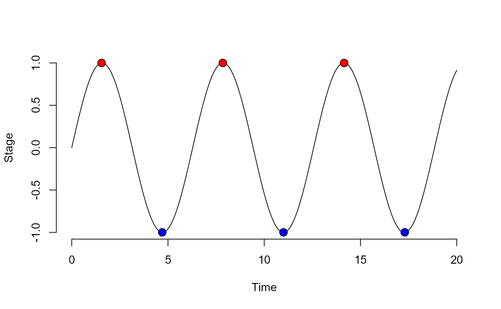

peakDet.RdA peak detection algorithm for R; finds local maxima and minima. Based on an algorithm for MATLAB by Eli Billauer (http://www.billauer.co.il/peakdet.html).
A list containing two data frames maxtab and mintab containing maxima and minima. Data frames contain two columns with indices in v (or corresponding values in x if provided) and values in v.
peakDet(v, delta, x = NULL)a numeric vector where to search peaks.
numeric of length one; defining the local threshold for peak detection.
a numeric vector the same length as v containing corresponding x-values for v.
x <- seq(0, 20, .05)
vals <- sin(x)
det <- peakdet(vals, .5, x)
#> Error in peakdet(vals, 0.5, x): could not find function "peakdet"
det
#> function (x, ...)
#> {
#> z <- determinant(x, logarithm = TRUE, ...)
#> c(z$sign * exp(z$modulus))
#> }
#> <bytecode: 0x000000003853cd20>
#> <environment: namespace:base>
plot(x = x, y = vals, frame = FALSE, xlab = 'Time', ylab = 'Stage', type = 'l');

points(det$maxtab$val~det$maxtab$pos, bg = 'red', pch = 21, col = 'black',
lwd = 0.9, cex = 1.5);
#> Error in det$maxtab: object of type 'closure' is not subsettable
points(det$mintab$val~det$mintab$pos, bg = 'blue', pch = 21, col = 'black',
lwd = 0.9, cex = 1.5)
#> Error in det$mintab: object of type 'closure' is not subsettable